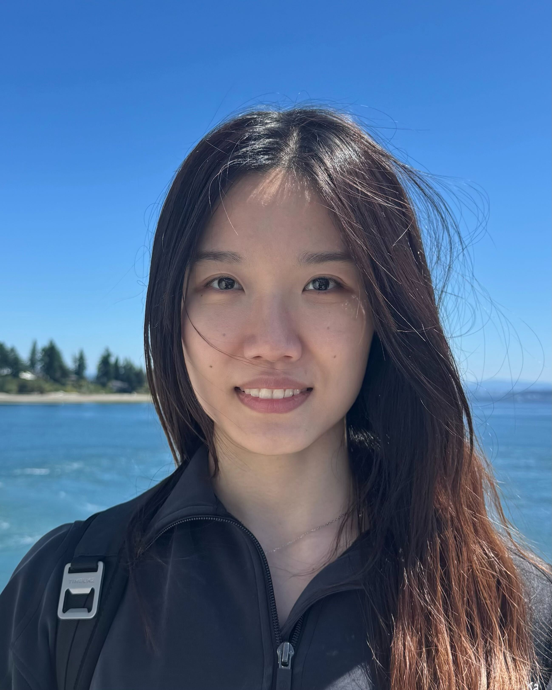

|
Rulin Shao
I am a third-year PhD at University of Washington advised by Prof. Pang Wei Koh and Prof. Luke Zettlemoyer .
I am also a visiting researcher at Meta working with Scott Yih and Mike Lewis .
I completed my master's in Machine Learning at CMU advised by Prof. Eric Xing and my undergraduate degree in Mathematics at XJTU.
I'm interested in building an AI system that can automatically collect information from diverse sources, conduct deliberate practice, and decide how to spend time, compute, and storage to handle complex tasks.
Google Scholar /
GitHub /
Twitter /
LinkedIn /
Email
|

|